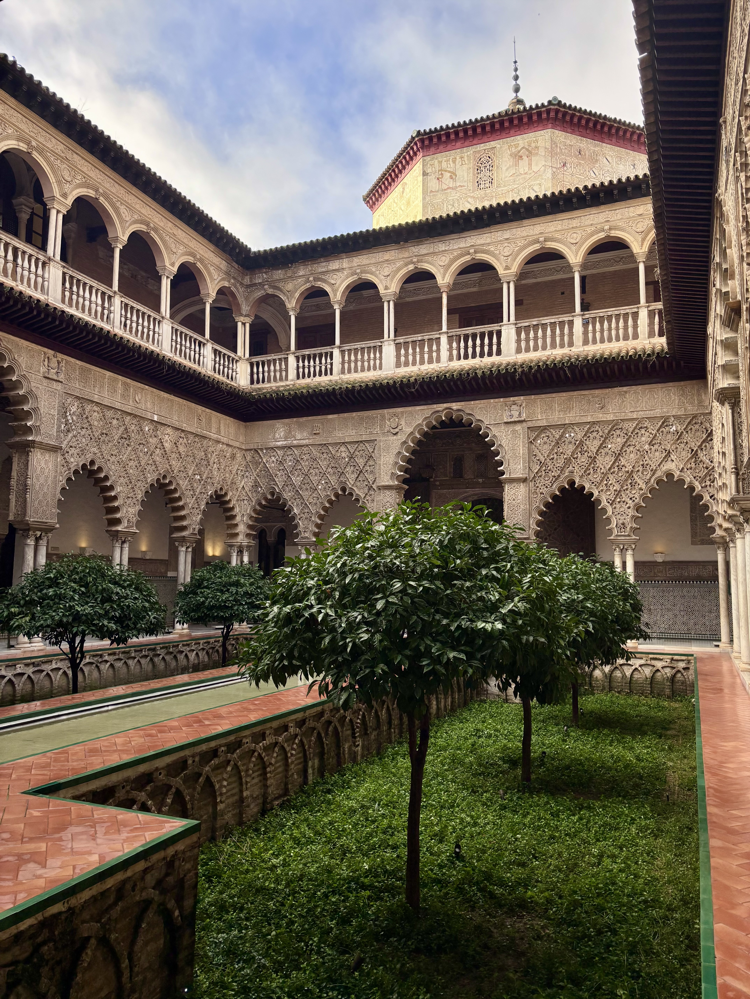
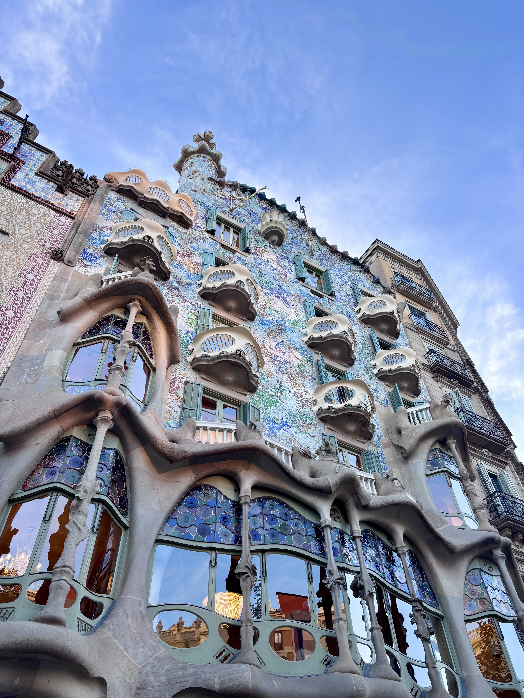
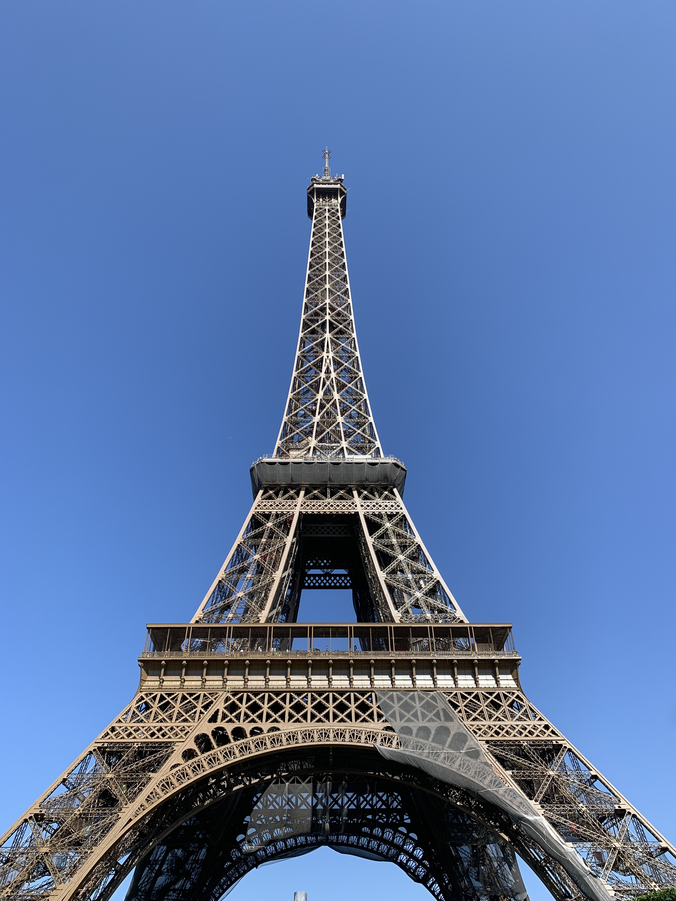
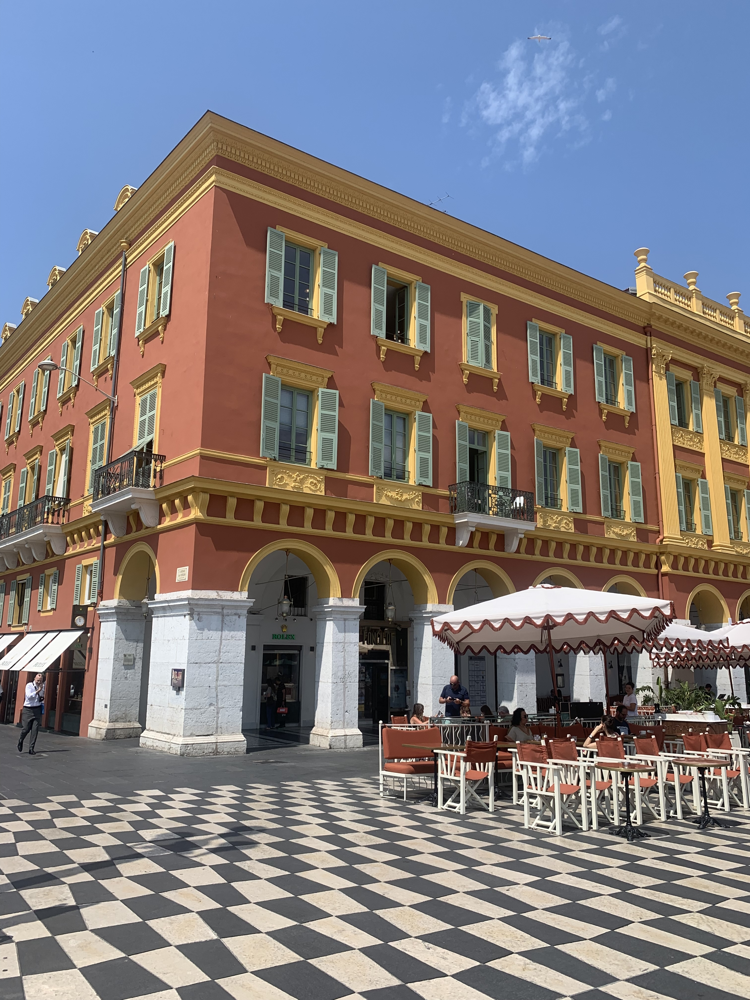

Hi, I'm Camryn Carter
Welcome to my website!
Professional Summary
Detail-oriented program and project manager with experience orchestrating cross-functional initiatives across various industries. Skilled in strategy, operations, and engineering with a passion for efficient problem-solving. Interested in product, design, & AI.
Work Experience
Project & Program Management, Office of Regulatory Relations — Goldman Sachs
Feb 2025 – Present
Strategy Consultant, Operations Transformation — Strategy& (PwC)
Oct 2023 – Feb 2025
Strategy Consultant Intern, Operations Transformation — Strategy& (PwC)
June 2022 – August 2022
Quality Operations Intern — Merck&Co.
May 2021 – August 2021
Education
University of Pennsylvania — B.S. Systems Engineering, 2023
Unionville High School — 2019
Skills
- Project & Program Management
- Strategic Planning
- Cross-functional Team Leadership
- Operation Strategy
- Process Improvement
- Data Analysis
Volunteering
- SEO Mentoring -- offering ongoing mentorship to NYC high school students to help them navigate the college admissions process and professional development
- Network for Teaching Entrepreneurship (NFTE) -- involved in business plan competition judging for entrepreneurial education amongst competing high school students
Interests
Just a few things I enjoy:
- Pilates & hot yoga
- A good book & matcha
- Exploring new cities
- Karaoke night with friends
- Long walks with an upbeat playlist
- Scuba diving (when I can)
- Capturing photos of pretty things
Travel: Places I've Visited
Goal: Visit a new country or two cities each year. Upcoming Countries: Canada, Budapest, Austria, & Vienna
Bucket List / Next Travel (hopefully):
1. Sydney, Australia
2. Shanghai, China
3. Machu Picchu, Peru
4. Seattle, Washington
5. Yosemite, California
Photography
Some of my favorite images from recent travel destinations.








Reading
Books I've Read in 2026:
- ** Highly Recommend
- Total Count: 4
- Theo of Golden by Allen Levi – Currently Reading
- The Very Depths Did Rot by Lyndsey Reeve – Finished
- The Metamorphosis by Franz Kafka – Finished
- Hello Beautiful by Ann Napolitano – Finished
- All the Colors of the Dark by Chris Whitaker– Finished
Books I've Read in 2025:
- My book club at work recently read the The Mountain is You by Brianna Wiest and Tomorrow and Tomorrow and Tomorrow by Gabrielle Nevin.
- Total Count: 27
- The Sisters of Fortune by Anna Lee Huber – Finished
- Bully Market: My Story of Money and Misogyny at Goldman Sachs** by Jamie Fiore Higgins – Finished
- Show Don't Tell by Curtis Sittenfeld – Finished
- Remarkably Bright Creatures by Shelby Pelt – Finished
- The River is Waiting by Wally Lamb – Finished
- All That Life Can Afford by Emily Everett – Finished
- Royally Not Ready by Megan Quinn – Finished
- How to Win Friends and Influence People by Dale Carnegie – Finished
- Great Big Beautiful Life by Emily Henry – Finished
- Inspired by Marty Cagan – Finished
- The Let Them Theory** by Mel Robbins – Finished
- Tomorrow and Tomorrow and Tomorrow** by Gabrielle Nevin – Finished
- Broken Country** by Claire Leslie Hall – Finished
- The Mountain is You by Brianna Wiest – Finished
- Working Backwards: Insights, Stories, and Secrets from Inside Amazon by Colin Bryar & Bill Carr– Finished
- Just for the Summer by Abby Jimenez– Finished
- Hillbilly Elegy by JD Vance – Finished
- The Housemaid's Secret by Freida McFadden – Finished
- The Housemaid is Watching by Freida McFadden – Finished
- Everything Must Go by Camille Pagan – Finished
- Slowing Down to the Speed of Joy by Matthew Kelly – Finished
- No Reservations by Shelby Lister – Finished
- Acceptance** by Emi Nietfield – Finished
- Another Life by Kristin Hannah – Finished
- The Paper Palace by Miranda Cowley Heller – Finished
- What Happened to Nina? by Dervla McTiernan– Finished
- Say You'll Remember Me by Abby Jimenez – Finished
Music
Spotify Playlists I Have Created:
Contact Me
If you’d like to get in touch, feel free to reach out via any of the following:
- LinkedIn: linkedin.com/in/camryn-carter
- Instagram: @cams_camera11